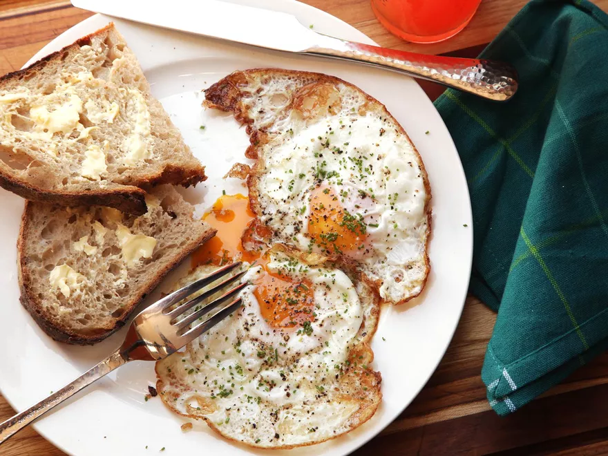

Crispy Fried Egg

Description
Crispy instead of soft and fluffy. Better this way.
At least I think so.
Ingredients
- Uncracked large egg
- Olive Oil
- Kosher salt
Instructions
- Heat oil in a 10-inch cast iron, carbon steel, or nonstick skillet over medium-high heat until shimmering. (A small drop of water dropped into it should immediately sizzle.)
Carefully break egg into hot oil, dropping them from right above the surface to prevent hot oil from splashing. Season with salt.
- Tilt the skillet toward you so oil pools against the side of the pan. Using a spoon, baste egg with hot oil, aiming at the uncooked portions of the egg white and avoiding the yolk.
Continue basting until eggs are puffy and cooked, 45 seconds to 1 minute. Transfer to a plate and serve.